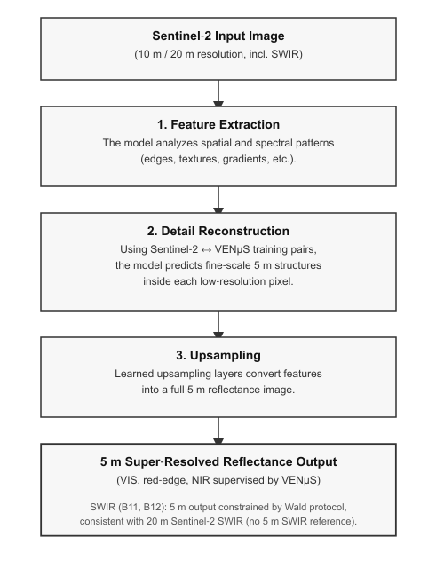

The super‑resolution model enhances Sentinel‑2 imagery by increasing its spatial resolution from 10 m or 20 m down to
5 m. Instead of using traditional interpolation methods (such as averaging or resampling), the model is trained to
predict what real 5 m structures look like based on examples from the SEN2VENµS dataset and an extended training
strategy for the SWIR bands.
Training Data
To learn this mapping, the model uses pairs of images that were:
captured on the same day,
within 30 minutes of each other,
and processed with the same atmospheric correction chain (MAJA).
Each pair contains:
a low‑resolution Sentinel‑2 patch (10 m or 20 m), and
a corresponding 5 m VENµS patch of the same area for the bands that VENµS observes (VIS, red‑edge, NIR).
For these bands, the model learns a direct cross‑sensor mapping from Sentinel‑2 (10 m / 20 m) to VENµS (5 m). In
addition, the training data are complemented with Sentinel‑2 SWIR bands B11 and B12 at their native 20 m resolution,
for which no 5 m VENµS reference exists.
How the Model Generates 5 m Pixels
When upscaling, the model does not split or average the original pixels. Instead, it performs three steps:
Feature Extraction
The model analyzes the spatial and spectral patterns in the Sentinel‑2 input (edges, textures, gradients,
vegetation structure, etc.) across all bands.
Detail Reconstruction
Using what it learned during training, the model infers the fine‑scale structures that typically exist inside each
10 m or 20 m pixel. For the VIS, red‑edge and NIR bands, these details are supervised directly by 5 m VENµS
observations. For the SWIR bands, the model reuses the learned spatial priors and is constrained to remain
consistent with the original 20 m SWIR signal (see below).
Upsampling to 5 m
The final 5 m image is produced by applying learned upsampling layers that convert the internal feature
representation into a full‑resolution reflectance image for all supported bands.

Handling of SWIR Bands (B11, B12)
VENµS does not include SWIR bands, so there is no true 5 m reference for Sentinel‑2 B11 and B12. To still provide
spatially enhanced SWIR outputs, the model uses a dual‑loss training strategy:
a full‑resolution loss at 5 m for all bands that have a VENµS counterpart (B2, B3, B4, B8, B5, B6, B7, B8A),
and a lower‑resolution consistency loss for B11 and B12 based on the Wald protocol: the predicted 5 m SWIR is
downsampled back to 20 m and compared to the original Sentinel‑2 SWIR input.
This ensures that the 5 m SWIR bands remain radiometrically consistent with the native 20 m Sentinel‑2 data, while
benefiting from the spatial structures learned from the other bands. The 5 m SWIR outputs are therefore spatially
enhanced and consistent, but they are not directly supervised by real 5 m SWIR measurements.
What This Means in Practice
A single 10 m pixel becomes four 5 m pixels.
A single 20 m pixel becomes sixteen 5 m pixels.
The values of these new pixels are predicted, not averaged.
For VIS, red‑edge and NIR bands, the output is designed to resemble what the VENµS satellite would have observed at
5 m resolution.
For SWIR bands (B11, B12), the output is a spatially enhanced 5 m product that is constrained to remain consistent
with the original 20 m Sentinel‑2 SWIR signal.
Why This Approach Works
Because the model is trained on real cross‑sensor pairs and a SWIR‑specific consistency loss, it learns:
how Sentinel‑2 reflectance patterns translate to finer spatial structures,
how to reconstruct high‑frequency details for bands with 5 m VENµS supervision,
and how to maintain radiometric consistency for both supervised bands and SWIR bands.
This results in a 5 m product that is sharper and more detailed than interpolation, while remaining physically
meaningful for downstream analysis. For SWIR, users should keep in mind that the enhancement is constrained by
consistency with the 20 m input rather than by true 5 m SWIR measurements.